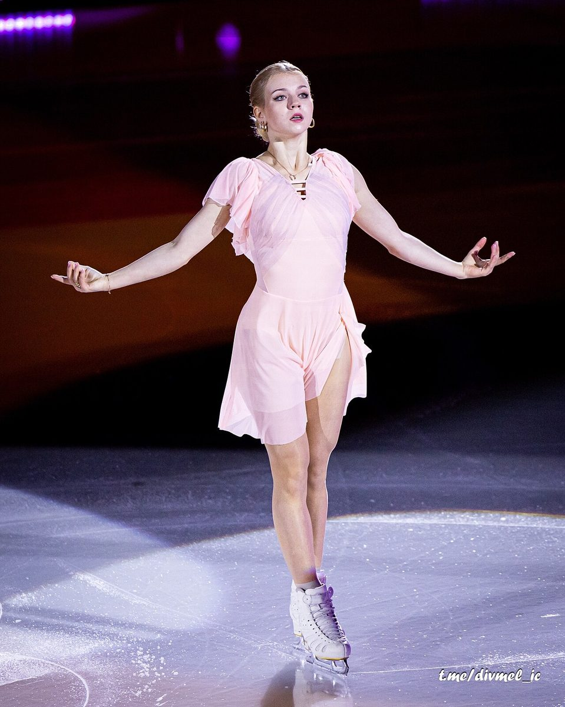
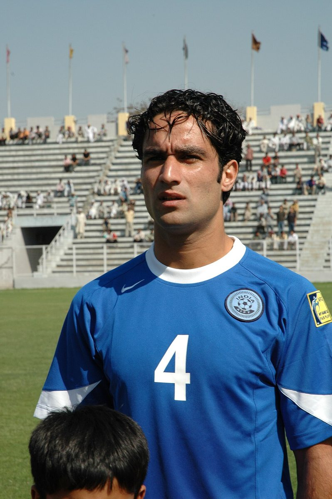

米奇科夫两次助攻帮助费城飞人4比3险胜布法罗军刀 连续得分场次增至五场
21岁的俄罗斯小将为杰米·德赖斯代尔和克里斯蒂安·德沃夏克的进球送出助攻，德沃夏克第三节的进球成为制胜球。

爱尔兰拳手李·里夫斯去世，年仅31岁 三个月前在都柏林比赛中受伤
里夫斯8月被加里·卡利击倒，此后在医学诱导昏迷中度过三个月。他的推广公司Queensberry称他是社区的榜样和激励。

亚历山大·沃尔科夫与UFC续签新合同 冠军战谈判已启动
据其经纪人透露，这位38岁的俄罗斯重量级选手在10月于阿布扎比的UFC 333击败里兹万·库尼耶夫一个月后，签下了多场比赛的新合同。

维尼修斯12分钟上演帽子戏法 巴西7比0大胜新加坡
维尼修斯·儒尼奥尔在第9、15和21分钟连进三球，完成个人国家队首个帽子戏法，恩德里克、埃斯特旺和拉扬也在国家体育场取得进球。

柬埔寨足球超级联赛：俱乐部更强，看台却空。逐队分析如何培养球迷
柬埔寨俱乐部在亚洲赛场取得胜利，联赛场均观众却只有约1300人。11家俱乐部的数据、吴哥猛虎在暹粒的崛起，以及日本和泰国的经验，显示了每家俱乐部可以做什么。

林丹：“超级丹”如何包揽羽毛球所有重大冠军
他在首届奥运会首轮出局，之后在北京和伦敦两夺金牌，五获世锦赛冠军，并集齐羽毛球全部九项重大赛事冠军。

“神奇小子”汤普森在UFC 334以转身踢KO对手后退役
43岁的斯蒂芬·汤普森在麦迪逊广场花园第三回合击倒查尔斯·拉德克，结束16年综合格斗生涯。达纳·怀特表示，UFC将测试他能否担任解说。

伊格纳托娃（特鲁索娃）再获大奖赛银牌 向中国重庆总决赛迈进
这位2022年冬奥会银牌得主继中国杯获得亚军一周后，又在美国站获得第二名。在还剩两站比赛的情况下，她目前积分排名第二。

辽宁女足提前一轮首夺中国女超联赛冠军
在沈阳主场1比1战平北京队后锁定冠军，一年前辽宁队正是在最后一轮输给同一对手而丢冠。

英格兰十人作战 3比2客胜西班牙 力压对手获欧国联小组第一
凯恩、孔萨和本·怀特先后破门，埃利奥特·安德森随后被罚下，英格兰顶住反扑，终结西班牙43场不败。

历史上的今天（2005年）：澳大利亚苦等31年，点球大战击败乌拉圭重返世界杯
在澳大利亚体育场，袋鼠军团在惊心动魄的点球大战中淘汰乌拉圭，昂首挺进2006年德国世界杯。

速滑世界杯北京站：中国队斩获四金 宁忠岩、廉子文、高亭宇先后夺冠
宁忠岩以打破场地纪录的成绩赢得男子1000米，并在1500米再夺一金；廉子文和高亭宇在“冰丝带”各赢一场500米。

埃·普通：从戈公走出的高棉拳代表人物
他曾在多个级别夺得全国冠军，在金边击败外国对手，免费教流浪儿童练拳，如今执教柬埔寨的新一代冠军。

马龙：从鞍山少年到六枚奥运金牌
他曾无缘2012年伦敦奥运会男单阵容，此后蝉联奥运男单冠军，并实现世乒赛男单三连冠。

日本队补时绝杀 在新加坡3比2击败巴西
维尼修斯梅开二度帮助巴西扳平后，坂元达裕第91分钟打入制胜球；安切洛蒂和拉菲尼亚被罚下。

UFC 334：加内让霍基特首尝败绩 哈里森降服努涅斯
两位冠军在麦迪逊广场花园双双卫冕：西里尔·加内以三张48比47的记分卡获胜，凯拉·哈里森第四回合以裸绞取胜。

越南U23战平卡塔尔 以不败战绩夺得嘉莱VTV杯冠军
阮明心在波来古下半场开场不久扳平比分，为东道主拿到夺冠所需的一分。

印度U17队12比0大胜关岛 升至亚洲杯预选赛小组第一
队长达拉尔穆恩·冈特在吉隆坡上半场上演帽子戏法；印度下一场对阵同积6分的巴勒斯坦。

体坛历史上的今天：2010年维特尔首夺F1世界冠军，创下最年轻总冠军纪录
红牛车队的德国新星在阿布扎比大奖赛加冕车手总冠军，由此开启了车队为期四年的统治时代。

高棉拳智利培训班吸引65人参加 国际联合会计划拓展南美
在圣地亚哥举办为期三天的培训后，高棉拳国际联合会计划在巴西、阿根廷、乌拉圭、巴拉圭和玻利维亚开展培训。

曼联官宣波切蒂诺出任主帅 此前已解雇卡里克
这位前热刺和切尔西主帅签约至2029年，将在完成美国队的执教任务后于11月18日上任。

挽救赛点险胜诺斯科娃，佩古拉挺进WTA年终总决赛四强
美国老将在局势跌宕起伏的鏖战中化解赛点，力压高芙晋级，半决赛将迎战米拉·安德烈娃。

替补宝龙建功 越南U23击败新加坡 距VTV杯冠军仅一步之遥
越南队在波来古1比0取胜，取得两连胜，周六只需战平卡塔尔即可夺冠。

魔鬼队5比2击败首都人 奥韦奇金进球荒延长至12场
在已宣布的告别赛季中，这位NHL历史进球王17场比赛仅进1球，接近其职业生涯最长的进球荒纪录。

皮奥·埃斯波西托梅开二度 意大利3比1逆转法国 齐达内迎来执教首败
意大利在圣西罗球场逆转取胜，凭借相互交锋成绩升至欧国联A1组榜首，小组赛还剩最后一轮。

执教仅16场，水晶宫官宣解雇皮埃尔·萨热
目前球队在英超积分榜垫底，俱乐部正与托马斯·弗兰克进行深入谈判。

安德烈耶娃连赢11局击败萨巴伦卡 晋级WTA年终总决赛四强
19岁的安德烈耶娃在印第安维尔斯以6比4、6比0获胜，首次参赛便以小组第一出线，成为自2016年库兹涅佐娃之后首位从小组赛突围的俄罗斯球员。

甘特上演帽子戏法 印度U17逆转4比2击败新加坡
在吉隆坡进行的2027年U17亚洲杯预选赛E组首轮中，印度队长连进三球，带领球队逆转取胜。

戈洛温与乌梅亚罗夫无缘俄罗斯队11月热身赛
主帅瓦列里·卡尔平确认伤病隐患，国家队目前正在塔什干备战即将到来的友谊赛。

500美元的豪赌：帕奇·赫弗芬格如何成为美式橄榄球历史上首位职业球员
1892年11月12日，宾夕法尼亚州的一场秘密交易，永远改变了美国体育的版图。